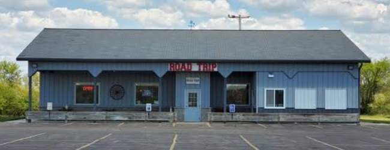
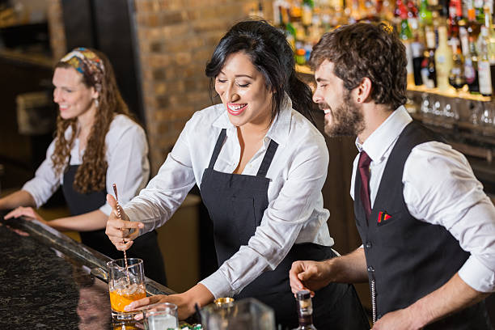

Our History
Road Trip began as a small idea between a group of longtime friends who shared a love for travel, live music, and neighborhood gathering spots that felt full of personality. After years spent exploring roadside diners, hidden bars, and local hangouts across the country, they decided to create a space that captured the same sense of

spontaneity and connection they experienced on the road. What started as a modest corner bar quickly earned a reputation for its welcoming atmosphere, carefully crafted drinks, and décor inspired by classic American highways and vintage travel culture. From old license plates to framed maps and postcards, every detail was chosen to tell a story and make guests feel like they were part of the journey.Over time, Road Trip evolved from a local favorite into a well-known community destination where people came together for celebrations, live performances, and late-night conversations. The bar expanded its menu, introduced seasonal cocktail programs inspired by different cities and regions, and became known for hosting events that highlighted local musicians and artists. Despite its growth, Road Trip maintained the relaxed and approachable spirit that made it successful from the beginning. Today, the bar continues to celebrate the idea that great experiences often come from unexpected stops, good company, and the memories created along the way.
Our Team
At Road Trip, our team is the heart of everything we do. From the bartenders crafting signature cocktails to the servers creating a welcoming atmosphere, every member of our staff is passionate about bringing people together and making guests feel at home. We believe great hospitality comes from genuine connection, which is why our team focuses on creating an experience that feels relaxed, friendly, and memorable from the moment you walk through the door. Whether it’s recommending a new drink, sharing

stories with regulars, or keeping the energy alive during busy nights, the people behind Road Trip are dedicated to making every visit feel like part of the journey.What makes the Road Trip team unique is the mix of personalities, creativity, and experience that each person brings to the bar. Many of our staff members share a love for music, travel, food, and local culture, helping shape the atmosphere that guests have come to know and enjoy. Collaboration is a big part of who we are, and our team works together to introduce seasonal menus, host community events, and create new experiences that keep Road Trip fresh and exciting. Above all, we take pride in building a space where both guests and employees feel connected, valued, and inspired to come back again and again.